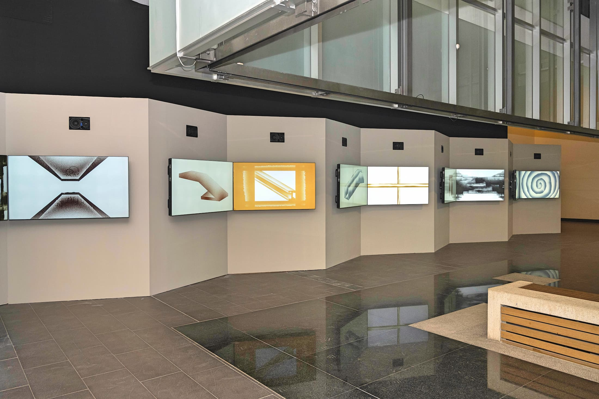
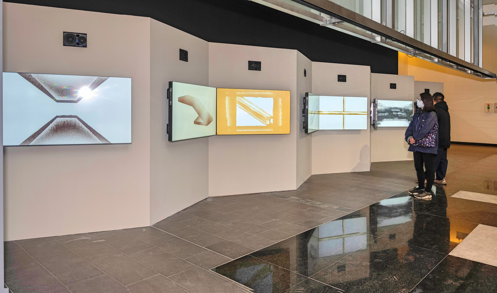
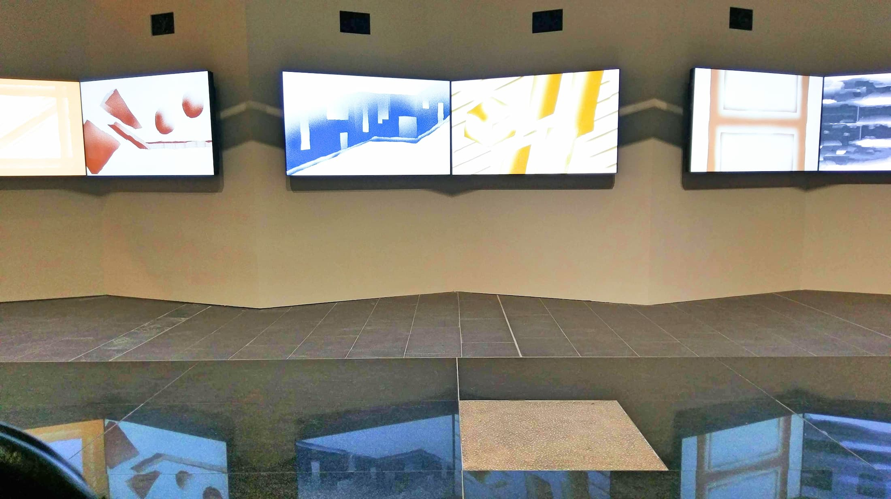
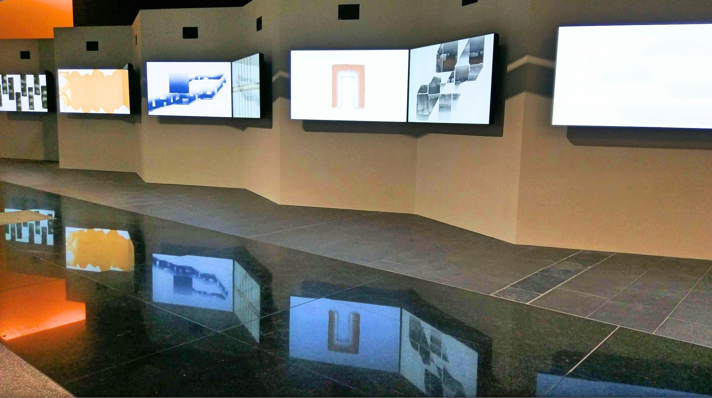

×
10-channel Video Sound Installation • 2021




If the word, architecture, refers not only to space and construction but also to what has happened in space, how can we understand architecture? And how can we imagine a building with vitality? In this work, the word “architecture” serves as a metaphor. From the perspective of sound, the artist captures the breathing and pulsation taking place in the space and transforms them into living musical forms. The artist takes sound production as a symbol and signal of the architecture’s life activity with the attempt to explore the connections between abstract architecture, body, and people. “Architecture 1/N” is a site-specific work that attempts to embody and explore the space with a life condition and the close relationship between people and sound. The various spatial patterns in architecture accommodate all kinds of human and physical objects. Among them, various human activities generate diverse sounds, which continuously vibrate, reflect, and reverberate, generating energy in a vibrating state. These vibrations are like subtle pulses, embodying the totality of environment, space, and people interaction, constructing an invisible body space.